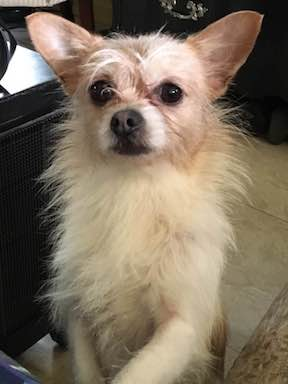
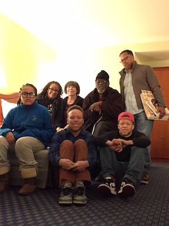
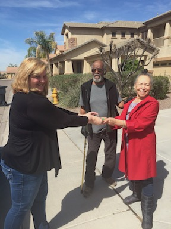
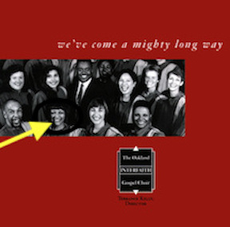

Mission Techie Class Project: My Bio
Her Homelife
I'm a San Francisco Native, Wife, Mother and lifelong Student who has lived in her neighborhood long enough to see a primarily
residential area morph into a mix of homes, "Live to Work" spaces, restaurants and condominiums. My family and I live in the house I grew up in
and we know almost all of the people who live on our block. I like that because we are real neighbors in the true sense
of the word. We watch over and take care of each other.
Her Spirituality
God is my rock. He has sustained me throughout my life experiences. If you don't get it,
or agree with me its ok. To each his own.
Her Favorite Things and People




Her Worklife
I'm semi-retired with 30 years of experience in the telecommunications industry. I rose up from the non-salaried ranks of operator services
to make a pit stop in consumer sales and service so that I could learn how to consult with customers and treat them well. I also learned to
the valued skill of remaining calm under intense pressure. Later, I used those skills to become an individual contributor in Global Markets Sales Operations.
I like discovering how things work and figuring out problems and that lead me to the position where I spent remaining 15 years of my career at AT&T.
I became a subject matter expert and team lead in a workgroup which was responsible for improving processes by implmenting automation of manual workflows associated
with ordering AT&T product. I'm very familiar with the Software Development Lifecycle process. My job responsibilities included drafting software
documentation, participation in and leading of user experience testing, defect management, and end user training. In my last position, I was lead for the
system support documentation and user communications. As the lead I was the admin, creator, editor and contributor for two systems I supported. For my next
"career", I'd like to tap into my creative side. I am currently "dabbling" in web design and learning front end development.
Her Continuing Education
I'm the SF Tech affiliated program called "Mission Techies" where I am taking classes to learn software progamming and development.
I am also a student at two on-line colleges Udemy.com and Udacity.com. Why?
Tech is here to stay and I need to "tool up" to be gainfully employed again. The Mission Techies program is providing me with a great opportunity
to get the skills I need FREE! In addition to the technical courses, I also want to take voice, art, and baking classes because those are things
I like to do. As the saying goes, do what you love, money will follow.
Her Hobbies
- I like to Sing. Singing gives me joy and its good for the soul
- I love baking it's theraputic and an outlet
for my creativity. Plus it tastes good. Why not make a little cash off of it?
- TV Thrillers, Cop Shows, Syfy are my favorite guilty pleasures.
I love the mystery and the challenge of figuring out who did the crime.
- Im a Social Media addict of sorts, but more out of necessity.
Facebook keeps me connected with far away relatives and friends for free.
YouTube and Pinterest help me to learn new things, get free workouts and recipes.
You name it, it's on there.
Her Favorite Foods
- Fried, Baked, or Barbequed Chicken
- Maccaroni and Cheese
- Burritos
- Tacos (Fish, Grilled Chicken,Steak)
- Red Beans and Rice
- Kale Chips
- Garlic Cheesy Bread
- Pink Lady and Envy Apples
- Potstickers
- Vegetable Egg Rolls
Her Top Ten Places to Visit
- Africa
- Japan
- China (Great Wall)
- Hawaii
- England
- Scottland
- Ireland
- India
- Grand Canyon
- Spain